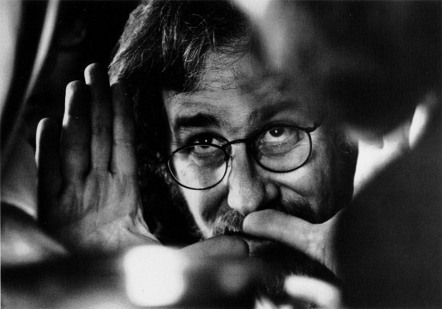

FORMACION
Steven Allan Spielberg (Cincinnati, Ohio; 18 de diciembre de 1946) es un director, guionista y productor de cine estadounidense.
Se lo considera uno de los pioneros de la era del Nuevo Hollywood y es también uno de los directores más reconocidos y populares de la industria cinematográfica mundial.
En Los Angeles, Steven Spielberg intentó ingresar sin éxito en la Universidad de Southern California para estudiar Cinematografía. Tras dos tentativas infructuosas, logró ser admitido en la Universidad del Estado de California en Long Beach, centro de menor prestigio que su primera opción del que salió en 1968 sin haber finalizado la carrera.